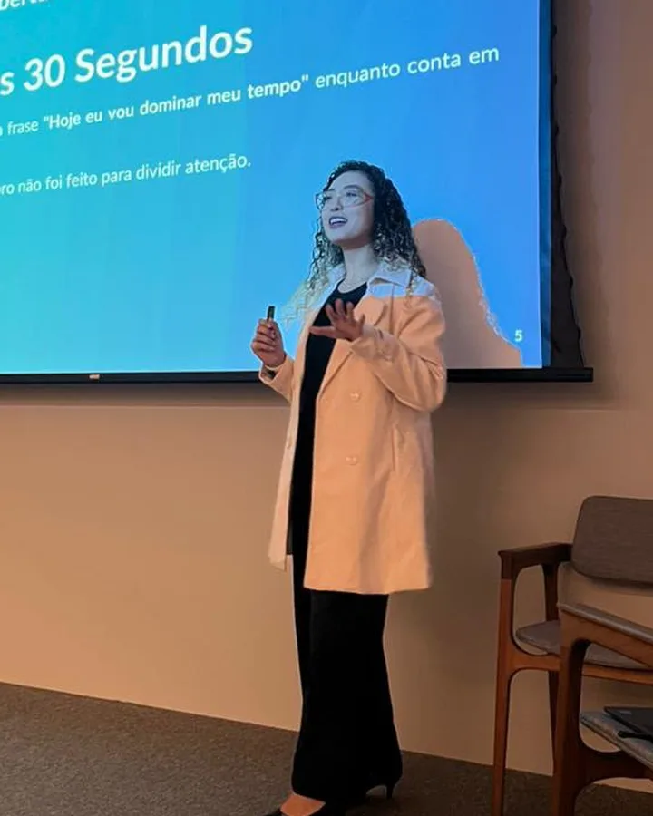
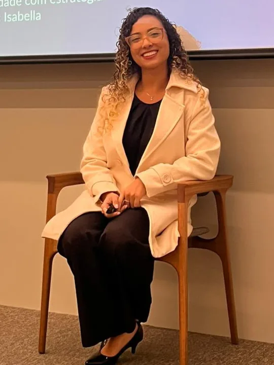

Autoestima e autoconfiança
Baixa autoestima, insegurança e dificuldade de confiar em si mesma.
Psicoterapia online · para todo o Brasil
Sou psicóloga clínica e organizacional e atendo de forma online pessoas de todo o Brasil. Na terapia, ofereço um espaço de acolhimento, reflexão e fortalecimento.
Para quem é
Se você se identificou com algum destes temas, talvez seja um bom momento para começar.
Baixa autoestima, insegurança e dificuldade de confiar em si mesma.
Gerenciamento do estresse e da sobrecarga emocional do dia a dia.
Transtornos de ansiedade e preocupações que não passam.
Desânimo, perda de interesse e desesperança.
Conflitos, medo de rejeição e relações que machucam.
Acompanhamento para compreender e lidar com as oscilações de humor.
Adiar o que é importante e travar antes mesmo de começar.
Estratégias para organização, foco e rotina no dia a dia.
A psicoterapia é um espaço seguro para compreender sua história, desenvolver recursos emocionais e lidar de forma mais saudável com os seus desafios.
Sobre mim
Moro em São Paulo e atendo de forma online pessoas de todo o Brasil. Trabalho como psicóloga clínica e organizacional, mas também gosto de participar de projetos na área social.
Na psicoterapia, busco oferecer um espaço de acolhimento, reflexão e fortalecimento, valorizando quem você é e reconhecendo seus contextos sociais, históricos e afetivos.
Meu compromisso é te apoiar em sua jornada de autoconhecimento e enfrentamento dos seus desafios. Conte comigo!
O objetivo do meu trabalho é contribuir para mudanças reais e significativas na vida dos meus pacientes.
Como são as sessões
Nas primeiras sessões, meu foco é te conhecer profundamente e entender o que você deseja construir na psicoterapia.
Ao longo do processo, definimos juntos objetivos e caminhos que façam sentido para a sua realidade.
Trabalho com intervenções práticas, desenvolvimento de habilidades emocionais e mudanças de comportamento, sempre me adaptando a cada caso.
Incentivo a autorreflexão por meio de perguntas que ampliam seu autoconhecimento e autonomia.
Um espaço seguro e sigiloso para você falar sobre suas dificuldades, emoções e objetivos, como determina o Código de Ética Profissional do Psicólogo.
Atendimento online
Os atendimentos são feitos por videochamada, para pessoas de todo o Brasil, com sessões de 50 minutos.


Para empresas
Atuo há 6 anos na área organizacional, com uma experiência corporativa que reúne gestão de riscos psicossociais, palestras e rodas de conversa com equipes de diferentes níveis, e ações de engajamento e fortalecimento da cultura organizacional.
Possuo expertise em palestras sobre:
Dúvidas
Ficou alguma dúvida? Me chame no WhatsApp.
É normal sentir dúvidas ou insegurança ao iniciar o processo terapêutico. Na entrevista inicial, eu faço algumas perguntas importantes para entendermos melhor a sua história de vida e o seu momento presente. Juntos vamos explorando o que for mais relevante para as suas necessidades atuais. O mais importante é que você se sinta confortável para se expressar no seu tempo.
As sessões são realizadas por videochamada através da plataforma Google Meet. O link é enviado para o seu e-mail e para o seu Google Agenda. A sessão online é tratada como um compromisso e para isso se faz necessário que esteja conectado a uma rede de internet, em ambiente privativo, livre de ruídos e sendo aconselhável o uso de fones de ouvido.
Sim. Tudo o que é compartilhado nas sessões, incluindo suas informações pessoais e sua história de vida, é mantido em sigilo. O Código de Ética Profissional do Psicólogo estabelece o sigilo como dever fundamental da profissão, garantindo a proteção da sua privacidade.
Trabalho somente com atendimentos particulares, mas emito o Receita Saúde (recibo digital gerado pela Receita Federal) para todos os pacientes. Caso o seu plano de saúde tenha a opção de reembolso, você pode solicitar utilizando este recibo e o comprovante de pagamento.
Os valores são acordados no contato direto comigo, conforme as diretrizes do Código de Ética Profissional do Psicólogo. Entre em contato para mais informações.
Talvez seja um bom momento para começar a olhar para si com mais cuidado. Me mande uma mensagem.
Agendar pelo WhatsApp